Breve descripción de mi persona:
Me llamo Luna Iriarte, nací el 5 de febrero del 2003. Me gusta mucho dibujar y escuchar música, me empecé a interesar en la programación desde mi segundo año de liceo cuando me enseñaron a programar por bloques con la aplicación de Scratch. Me gusta estar en compañía y trabajar en equipo, pero no tengo problema en disfrutar de mi soledad y hacer las cosas por mi cuenta, aunque mi personalidad es mayormente introvertida (hasta que agarro confianza jeje). Según un test de personalidad MBIT soy INFP.
Actualmente (julio 2023) estoy estudiando una carrera de nivel terciario: Profesorado de Ciencias Geográficas. En criollo, futura profesora de geografía. Me gusta todo lo relacionado con la materia y me encantaría en un futuro poder viajar a otros países y conocer nuevas personas y culturas; también estoy realizando un curso de CET, que te enseña a programar en bloques y poder lanzar una aplicación funcional. Y otro curso de programación llamado Jóvenes a Programar, en el cual estoy aprendiendo los conceptos básicos de la programación.
Para poder complementar y seguir aprendiendo sobre programación busco varios tutoriales en Youtube que estan muy bien explicados, en la sección portafolio dejaré algunos canales que veo.
Algo que me gustaría en un futuro es poder estudiar programación y animación de videojuegos, es un pendiente que tendré hasta poder conseguir el dinero para poder cursar la carrera.
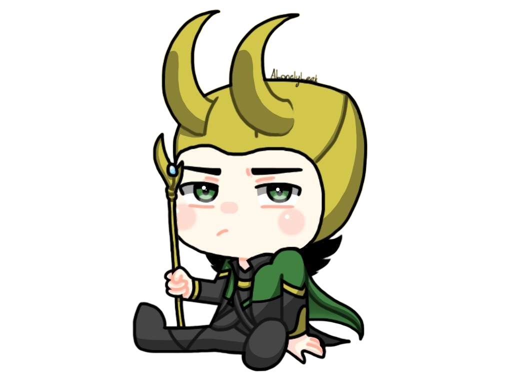Mentalidad:
Me gusta creer en cualquier teoría que pueda existir, creo que todo puede ser hasta que se demuestre lo contrario, me gusta muchísimo la ciencia ficción y creo que de ella parte mi interés por imaginar distintas posibilidades que puedan suceder en la realidad. Respeto mucho a los animales y haría lo que me fuera posible por ayudarlos, aunque eso no descarta el hecho de que consumo carne en mi dieta diaria. También tengo esa idea de que si todos los humanos tomáramos conciencia e hiciéramos algo por cambiar la situación de aquellos que no tienen un plato de comida al que acceder o una casa estable, este mundo sería un lugar mejor, sin tanto egocentrismo y sin que el "yo" gire en torno al humano y el "ahora" esté cubriendo los ojos del futuro. Porque seamos sinceros, si el humano midiera sus acciones a largo plazo, no llevaría a cabo muchas cosas que están dejando a las generaciones futuras con un planeta destrozado.
Aquí abajo podrán ver algunas listas sobre mis intereses.
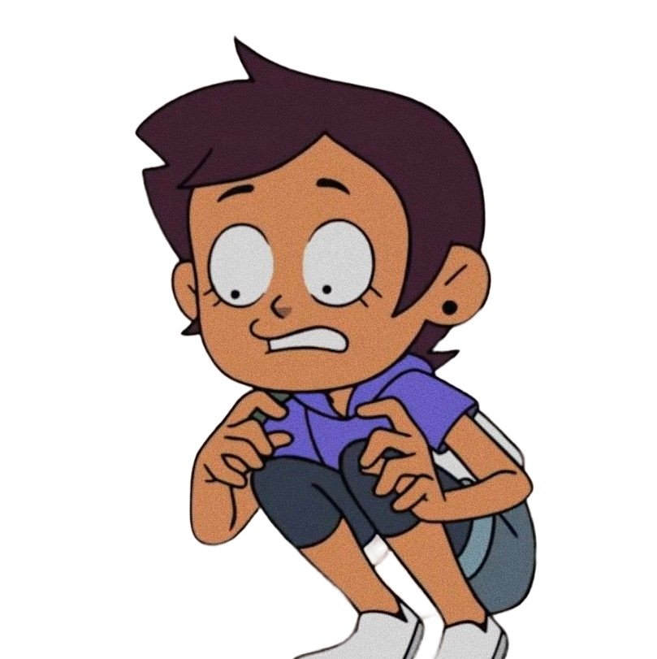Libros favoritos:
 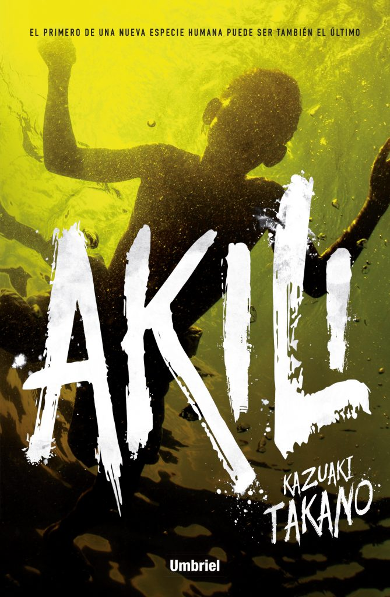
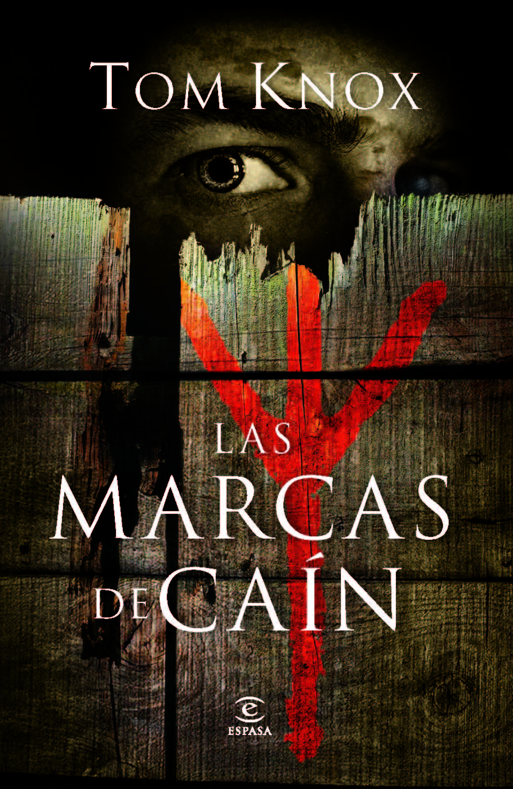
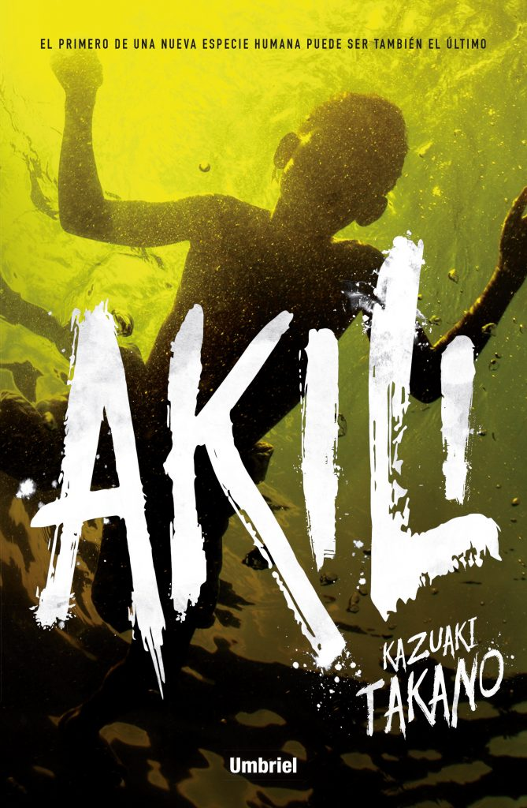
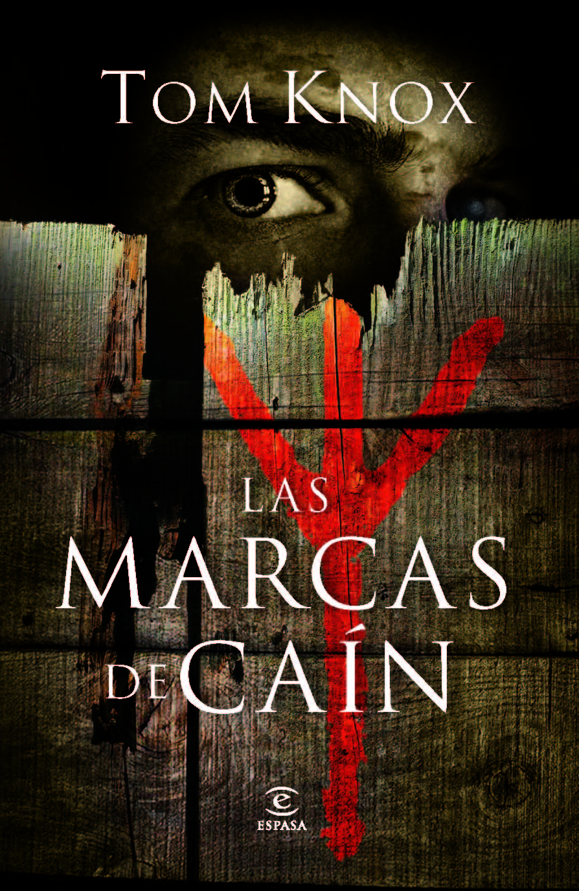
Mis series favoritas:


 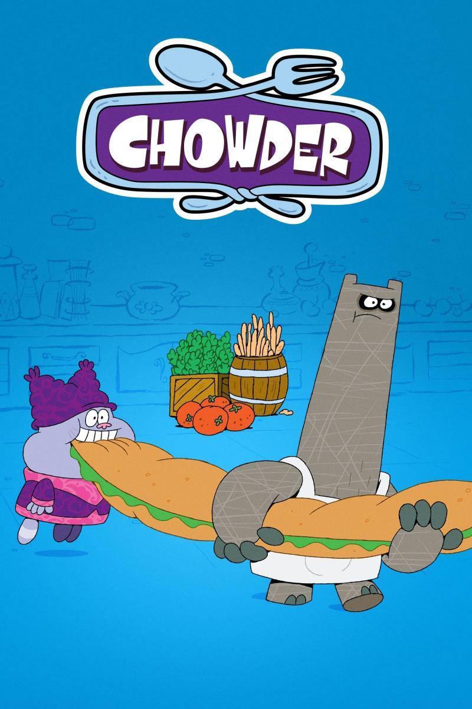
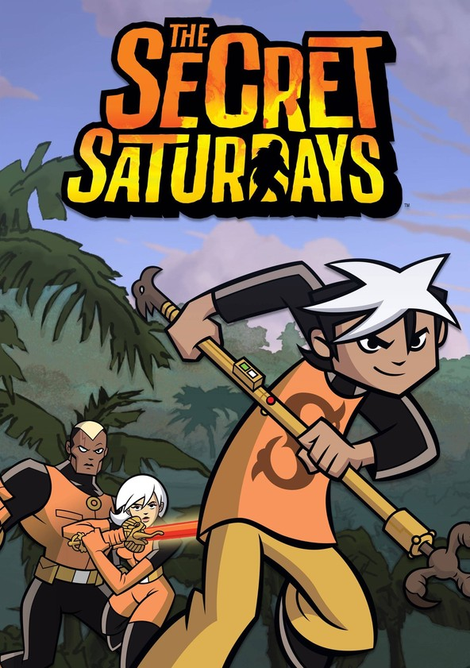
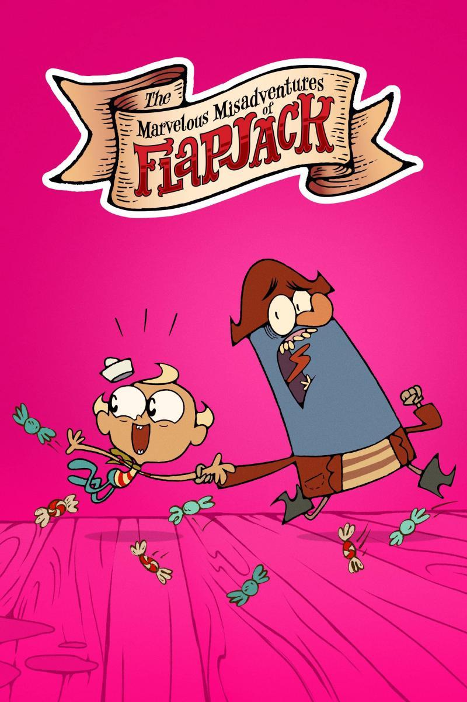
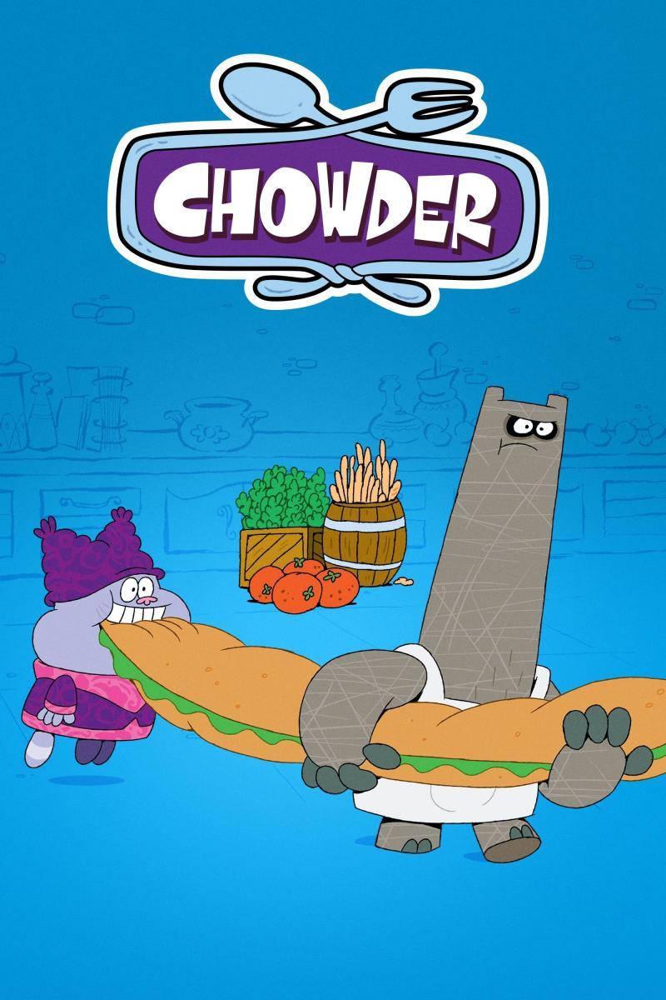
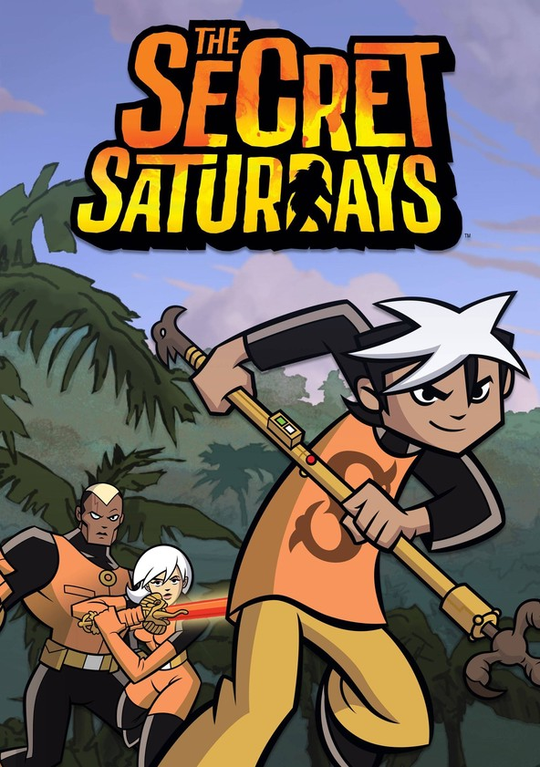
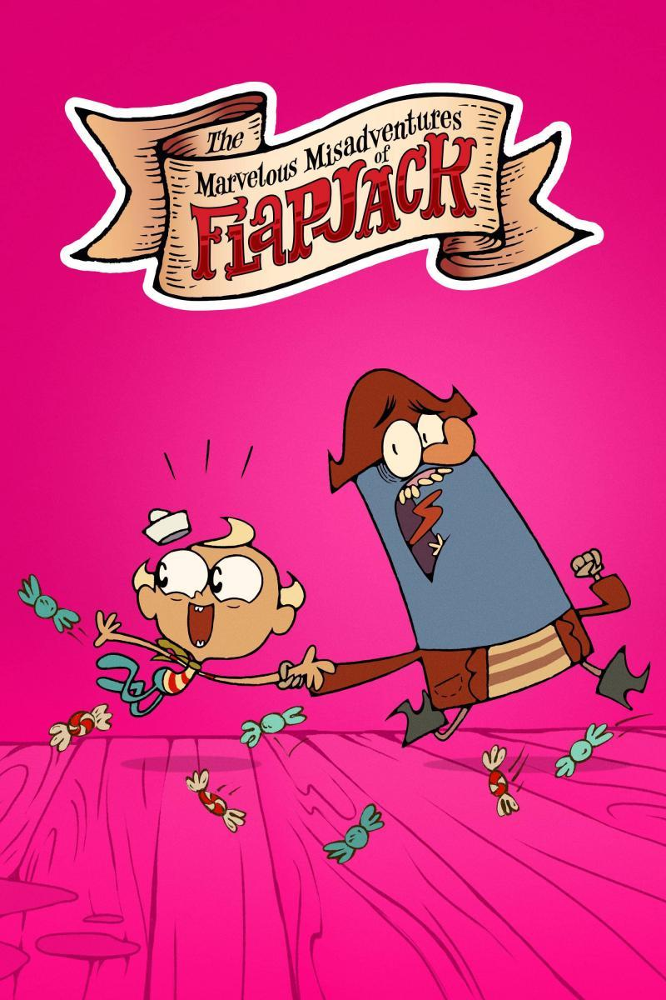
Videojuegos favoritos:


Artistas favoritos:
- Vanesa Martín
- Aurora Aksnes
- Kany García
- Melendi
- Lasso
- Ricardo Arjona
- Ismael Serrano
- Andrés Suárez
- Cacho Castaña
- Jorge Falcón
- Michael Jackson
Bandas favoritas:
- Jessy&Joy
- Queen
- Cuarteto de nos
- Pimpinela
- Mägo de Oz
- Airbag
- Miranda!
Películas favoritas:
- Iron Man
- Alicia en el país de las maravillas(2010)
- El extraño mundo de Jack
- Misión implacable
- Rocky